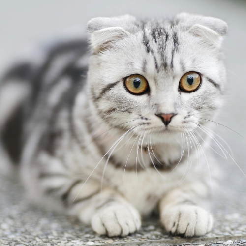

<!DOCTYPE html>
<html lang="zh-TW">

<head>
    <meta charset="UTF-8">
    <meta name="viewport" content="width=device-width, initial-scale=1.0">
    <title>前端程式設計 - img 變 circle</title>

    <!-- 註解的快速鍵: Ctrl+/ -->
    <!-- 自己定義的外部CSS  -->
    <link rel="stylesheet" href="./css/circleimg.css">
</head>

<body>
    <!-- 
     -->
    
    <div class="img-dog circle"></div>
    <div class="img-cat circle"></div>
</body>

</html>